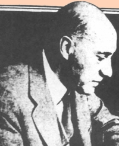

Arnold Van Laer
Arnold Johan Ferdinand Van Laer (most often cited as "A. J. F. Van Laer") was one of the great antiquarian contributors to the early history of Albany. Primarily a translator and editor of Dutch-language documents from New Netherland and seventeenth century Albany, this librarian and archivist also produced a number of valuable historical narratives.
Van Laer is said to have been born in Utrecht in 1869. Trained as an engineer and as an archivist, he graduated from the University of Delft, He settled in Albany in 1897 and lived there until his death. He graduated from the New York State Library School with a degree in library science.
His papers (primarily correspondence, notes, and reports) are held at the New York State Library.
In March 1911, he raced into the burning New York State Library and rescued numerous manuscripts from the fire. Afterwards, he began the laborious and unsettling task of trying to piece the charred reminants together.  However, more than a decade passed before he was able to begin to edit the documentary materials for publication and also publish a number of historical pieces.
Arnold Van Laer retired from State service in 1939. He died in 1955.
He may have been a descendant of early Albany householder Jacob Van Laer
Some of Van Laer's historical essays were selected and annotated by his eventual successor, Charles T. Gehring. In 1999, they were published by the New Netherland Institute.
The latest word on Van Laer and also what appears to be the only available likeness of him (taken from a newspaper in 1932 and reproduced here) was compiled by Peter A. Douglas and presented in an article in the 2006 issue of the Marcurius.
Biogaphical information copied from an online source: "In 1897, the year before the Manual was published, a twenty-eight year old Dutchman, Arnold John Ferdinand Van Laer,immigrated to the United States, settling in Albany. He had earned a degree in mechanical engineering at the University of Delft and had archival training in the Netherlands; sometime later he received a bachelor of library science from the New York State Library School. Van Laer headed the Manuscript Division of the New York State Library from 1899 to 1915. In 1915, he moved his life's work of translating Dutch colonial documents to the New York Division of Archives and History, retaining the title of archivist. Van Laer is best known for his translations of New York's colonial Dutch records. His contributions to the archival profession and his efforts to encourage the preservation of historical records are frequently overlooked. Although T.R. Schellenberg gave him the following credit, "The principle of provenance was first made known in the United States by Arnold J. Van Laer.... He applied the principle of provenance to the state archives, changing the method of arranging archives chronologically . . . Van Laer is, perhaps, the most important, and yet least recognized, link in the transfer of Dutch archivistiek to the new world."
Poor quality reproduction of a copy of a photo of Van Laer that appeared in the Albany Evening Journal on October 12, 1932. It is said to be the only known likeness of him.